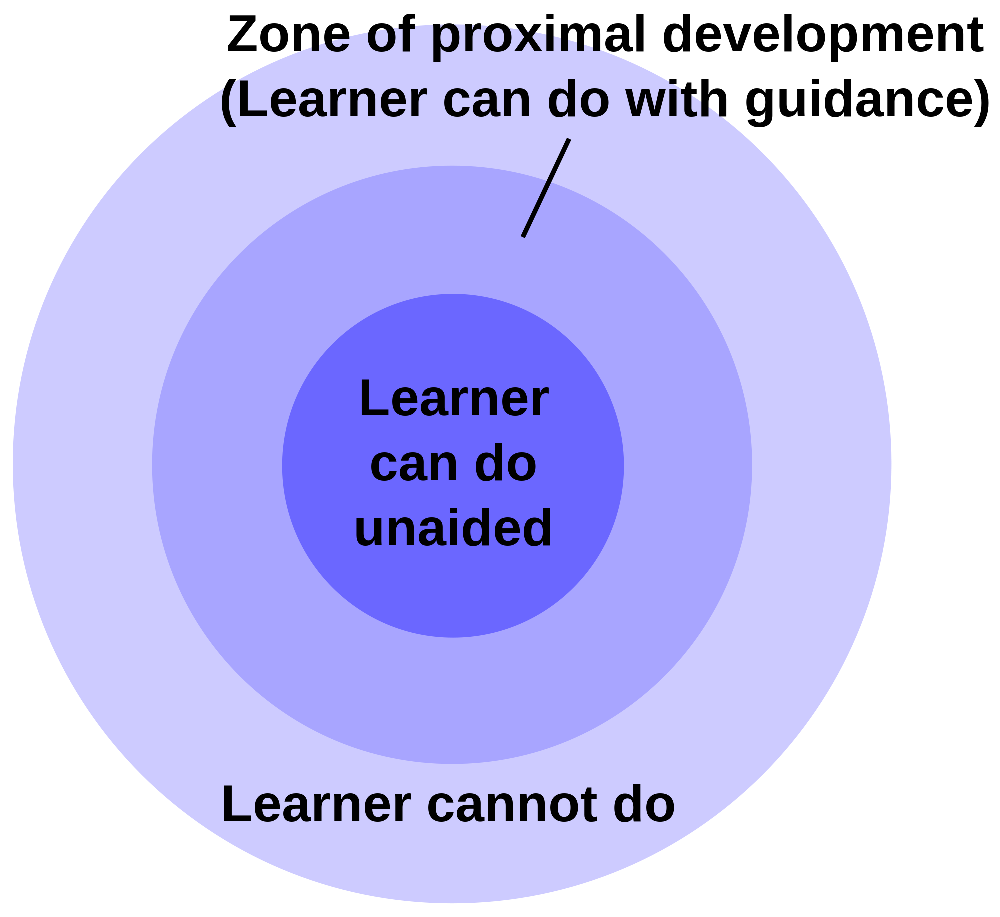

Exploring the Flipped Learning Model
Robert Talbert, Grand Valley State University
Twitter: @RobertTalbert / Google+: +RobertTalbert
Wilfrid Laurier University, 12 December 2014
Goals for today
Recap of the homework
Goals/concerns/questions
Presentation and demo of flipped calculus course
Open question/answer time [20min]
Group brainstorming: What could flipped learning look like in your classes?
Ending activity: What now?
Housekeeping
See Executive Summary handout for links to resources
All resources here are free, licensed under Creative Commons
You are entitled to free, one-on-one consultation with me for one month -- email talbertr@gvsu.edu to set up an appointment
Introductory Activity
[5 minutes] In groups of 2--3, finish these sentences:
- Flipped learning is...
- One course in which I'm considering flipped learning is...
- One problem that flipped learning solves is...
- One potential issue with flipped learning is...
Five Things that Make Flipped Learning Effective
And three things that don't
1. Clearly articulated learning objectives
Phrased as actionable tasks
Put in a public space
Explicitly linked to assessment
2. Rich, accessible set of high-quality learning resources
"Both/and" rather than "either/or"
3. Structured, low-risk/high-reward pre-class activities
Structured : Guide learners through the process of self-learning
Low-risk: Penalties for non-submission > penalties for incorrect work
High-reward: Incentive for completion > cost of doing the work
Wrong: "Please read Section 2.1 and let me know if you have questions"
4. Meaningful in-class activities
 http://en.wikipedia.org/wiki/Zone_of_proximal_development5. Communication
Clarifying student/prof roles and expectations
Regular solicitiation of feedback
...And actually acting on student feedback
Regular formative assessment
...And actually acting on the data
Listening to students -- verbal, nonverbal, and data
When I've failed with the flipped classroom, it's been because of:
Not enough structure and guidance, especially in pre-class activities
Lack of connection between pre-class and in-class work
Lack of communication (quantity + quality)
Demo: Flipped Calculus
Web site: http://teaching.proftalbert.com/mth201f14
See the Executive Summary handout for links to course materials
Questions to ask as you listen: What are the structural elements? What is the design and pedagogical philosophy? How is this similar/different from the courses I am interested in flipping? What are students thinking and doing?
Open Q&A time
Group Planning Activity
[15 minutes] How could you implement flipped learning in one of your classes? Pick a class, maybe one 50-minute session of one of those classes. Then come up with ideas for:
- What is your ideal vision for the student experience in your class?
- How could you structure the pre-class activities? (Remember: Structured, rich, low risk/high reward)
- What could you do in class?
- What kinds of formative assessment could take place before/during class and what will you do with the data?
- How do you make all of the above fit in your professional and personal life?
- What contingency plans might you have in case of issues?
Moving Forward Activity
[10 minutes] In small or large groups:
- Set some short- and long-term goals for yourself to learn more about flipped learning or implement it in an actual course.
- Identify some ways to connect with others who are using flipped learning, for growth and support.
- Think of some ways to continue this conversation into 2015.